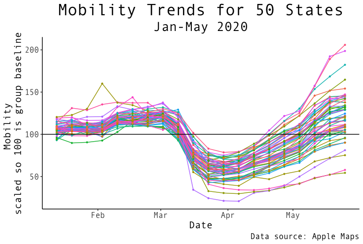
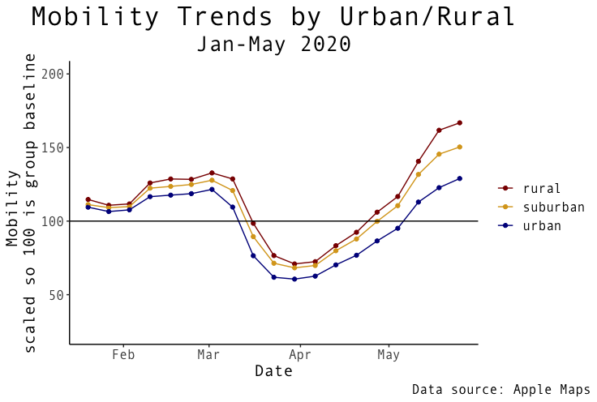

Mobility in the COVID-19 Era: Urban vs. Rural
 {fig-align=“center”}
{fig-align=“center”}
Introduction
In this unprecedented time, America and the world have experienced drastic changes in many aspects of modern day life. In an effort to “flatten the curve” of the coronavirus, American leaders urged for precautionary measures such as closing non-essential businesses, stay-at-home orders, and general social distancing protocol across the country.
The coronavirus has plagued our nation for several months now. In this post, I aim to answer two questions:
How did mobility of Americans change over time?
Did urban and rural mobility trends differ?
To answer these questions, I needed to find relevant, trusted data sources. Luckily, @NateSilver538 tweeted a link and a few frequencies of this mobility from data posted by Apple’s Apple Maps. Apple claims that “reports are published daily and reflect requests in Apple Maps.” This source is great because because it shows mobility trends before and during COVID-19 taking hold in America; however, there are a few obvious limitations. First, many people do not use mapping services for local destinations, so people could still being going places, but simply do not use the mapping service to indicate where they go. This will still be effective for tourism and tech-reliant individuals. Secondly, many people do not use the apple mapping service, preferring Google or other services for their travel. While noting these limitations, I still think there are enough people using Apple Maps and putting directions into their phone to generally track mobility trends in state and counties over time.
As I thought about appropriate ways to measure how urban or rural a county was, I realized the complexity of the problem. Many counties are perhaps mostly urban and mostly rural, but still many exist that are difficult to label as one or the other. After a little research, I came across a very helpful resource put together by the National Center for Health Statistics (NCHS). In 2013, they created their most recent classification system that divided counties into 6 groups based on their urbanization level. This would be a perfect resource for my purposes.
How Did Mobility of Americans Change Over Time?
For this first question, I created a figure to show the data. I looked at general mobility trends for each state from mid-January til the end of May. When I first plotted this data, I was surprised by all of the noise on the graph. It looked more or less like a cartogram measuring many heartbeats. I realized that Americans are more likely to enter navigations on certain days of the week, for weekends are more popular for traveling than Mondays and Tuesdays. So, for this reason, I decided to show the weekly mean of mobility to show clearer general trends. Additionally, each state starts at its own average mobility (set arbitrarily at 100) and any increase or decrease from that point is a percentage increase or decrease from that state’s average.
(Technical note: all of the points on the graph do not start at 100 because the baseline is the sum of navigation requests for each area on January 23rd. Whereas, each point represents the weekly mean. So, lines with points starting higher than 100 on average had higher mobility requests after the first day.)

The data shows a slight increase near the end of February into March followed by a drastic decrease as shutdown for COVID-19 starts. It is clear that from mid-march to mid-April mobility trends in the US dipped drastically, but now many states’ mobility are returning back to normal.
Note the overall variance of US states during February compared to the overall variance of US states at the end of May. There is much greater spread in the data at the end of May. This may signify that each state is in a different place in their recovery from COVID-19. Some states are lagging behind in their mobility while a few states even show significantly higher mobility rates even greater than pre-corona times; however, it seems the bulk of states have returned to almost-normal to normal mobility trends as of May 31st. Perhaps this is the case because more people like to travel in pleasant summer weather, or are ready to get out of the house after being cooped up.
Did urban and rural mobility trends differ over time?
To answer this question, I created two figures: one to show different states and counties returning to normal, and the other to look specifically at urban, suburban, and rural counties. The map below shows an interactive heat map across time. This is great at showing mobility trends across various states (and counties). It also shows the drastic decrease in mobility beginning mid-March, and the return to normal.
(Best viewing on Desktop; Press the play button for 😎)
The “white” color signifies average mobility while red shows higher mobility, and blue shows lower. Viewing the map over time, it seems to show states and counties with higher population dipping lower in mobility during the largest period of the COVID-19 shutdown, and also lagging behind others in returning to normal mobility at the end of May. While we may have a general idea which counties are truly urban, suburban, and rural, it can be hard to tell from the map.
For the last figure, I thought it would be more appropriate to look at county-level data as it is a smaller grouping geographically that can be more clearly defined as either urban, suburban, or rural. I incorporated the data from the NCHS to code various counties according to their individual level of urbanization, and then, I grouped the counties by rural, suburban, and urban.

Looking at these trends over time, it is what you might expect: rural counties maintain higher relative mobility across time. The gap between rural and urban widens toward the end of May with urban counties falling behind. Interestingly, many urban-classified areas seem to have returned to normal - though I expect urban counties in large cities like NYC to help in pulling down the urban average. The rural and suburban counties end well above their average in January which perhaps might suggest a trend where many people may want to move and travel after being living at home for a while.
Conclusion
While confounding variables exist such as some states have stay at home orders and other do not, this data shows a fairly good display of mobility trends overtime. Here is what we found from our analysis:
Mobility of Americans significantly decreased in March through April, but is beginning to return to normal for many states.
Each state is returning to normal at its own rate with some states recovering much faster than others.
Rural and suburban counties have maintained higher mobility trends compared to urban counties with increasing disparity over time.
Many states and counties have higher mobility ratings than pre-corona times which might be suggestive of a large wave of movement after Americans were kept inside with stay at home orders; however, it is important to note that mobility trends are general higher in the summer time anyway.
My coding is viewable here.
Thank you for looking through this post, and I hope you enjoyed it. I encourage you to share with others if you found it interesting.